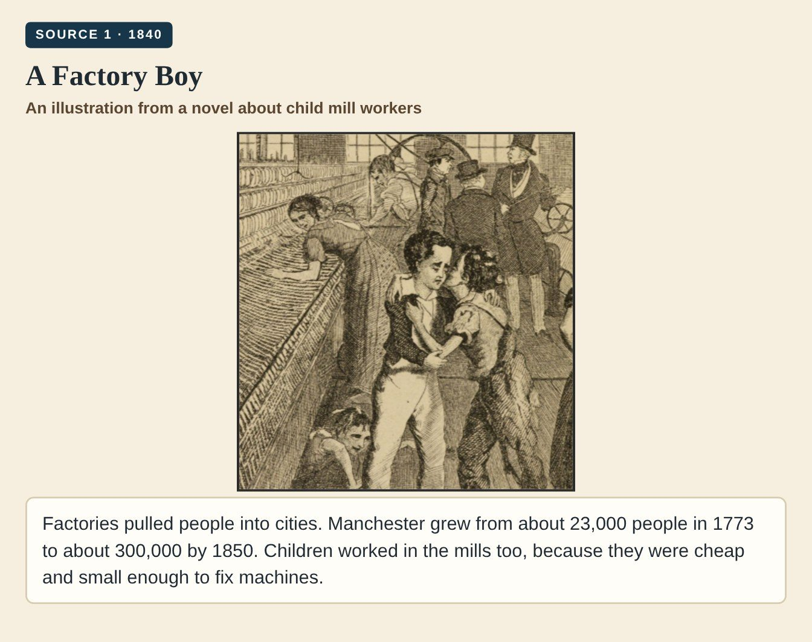

How it works: read the source pages → answer the question about today's big idea → read the fact file → write 1–2 sentences. Done = all parts green, then turn in at the bottom.
Word help (tap to open)
- Testimony = what a person says, under oath, to officials
- Thronged = very busy (old word)
- Trapper = a child who opened and shut air doors in a coal mine
- Luddites = workers who smashed machines that took their jobs
- Primary source = something made by people who lived at the time: a letter, a speech, a picture, a law

Click the page to make it bigger.
Turn in your work
Your work saves on this device, so you can come back later. Your teacher sees it after you turn it in.
Sources: illustration from Frances Trollope, Michael Armstrong, the Factory Boy (1840); Elizabeth Bentley's testimony to the Sadler Committee (1832); Sarah Gooder's testimony, Children's Employment Commission (1842); Gustave Doré, Over London by Rail (1872); Liverpool and Manchester Railway print (1831); print of a Luddite leader (1812). Images public domain, via Wikimedia Commons.